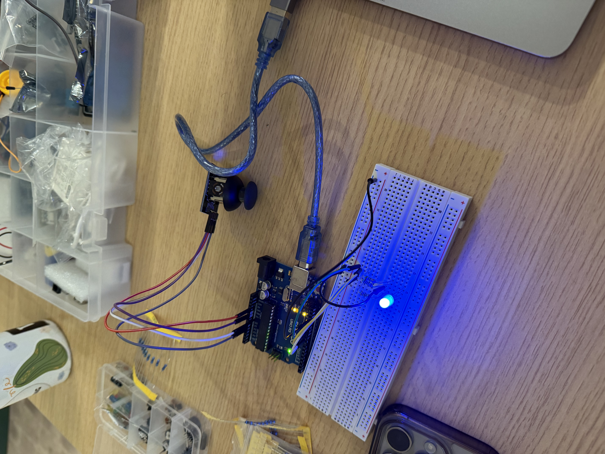

For the circuit, I used a RGB LED as the output and a joystick as my 2 inputs. The Red and Green prongs of the LED are connected to a 220 Ohm resistor and the Blue prong is conneced to a 100 Ohm resistor.

For the circuit, I used a RGB LED as the output and a joystick as my 2 inputs. The Red and Green prongs of the LED are connected to a 220 Ohm resistor and the Blue prong is conneced to a 100 Ohm resistor.


Red and Green needed a minimum of 160 Ohm. Blue needs a minimum of 85 Ohm.
void setup() {
Serial.begin(9600); // Begin serial communication
pinMode(9, OUTPUT); // Red pin
pinMode(10, OUTPUT); // Green pin
pinMode(11, OUTPUT); // Blue pin
}
void loop() {
int joystickX = analogRead(A0); // Read the X value of the joystick
int joystickY = analogRead(A1); // Read the Y value of the joystick
int xVal = map(joystickX, 0, 1023, 0, 255); // Map joystick values to analog values 0-255
int yVal = map(joystickY, 0, 1023, 0, 255);
// Send the mapped joystick values to serial for talking to the web
Serial.print("J:");
Serial.print(xVal);
Serial.print(",");
Serial.println(yVal);
// Read only when we have new RGB data ending with '\n'
if (Serial.available()) {
String input = Serial.readStringUntil('\n');
// To read color input
if (input.startsWith("C:")) {
input.remove(0, 2); // Remove "C:" prefix only leaving 3 number values for R, G, B
// Find the positions of the commas separating R,G,B values
int firstComma = input.indexOf(',');
int secondComma = input.indexOf(',', firstComma + 1);
// Check that both commas are found and in the correct positions
if (firstComma > 0 && secondComma > firstComma) {
// Get red component
int red = input.substring(0, firstComma).toInt();
// Get green component
int green = input.substring(firstComma + 1, secondComma).toInt();
// Get blue component
int blue = input.substring(secondComma + 1).toInt();
// Write the red, green, and blue values to the corresponding PWM pins, constraining each to ensure they're between 0 and 255
analogWrite(9, constrain(red,0,255));
analogWrite(10, constrain(green,0,255));
analogWrite(11, constrain(blue,0,255));
}
}
}
}
Explanation: The Arduino uses the function analogRead() to read joystick input from analog pins A0 and A1, giving values between 0 and 1023 because the Arduino has a 10-bit analog to digital converter. The joystick values (0–1023) are then converted (using the map() function) to a simpler range (0–255) to match the RGB LED's PWM inputs and color values. The RGB values received from the webpage are constrained between 0 and 255 using constrain() to ensure safe and stable LED brightness and color control.
const BAUD_RATE = 9600; // This should match the baud rate in your Arduino sketch
let port;
let redSlider, greenSlider, blueSlider;
let joystickX = 0, joystickY = 0, button = 0;
function setup() {
setupSerial();
createCanvas(windowWidth, windowHeight);
// RGB sliders for LED control
redSlider = createSlider(0, 255, 0, 1);
redSlider.position(10, height - 100); // position set
greenSlider = createSlider(0, 255, 0, 1);
greenSlider.position(10, height - 70); // positioned below the red slider
blueSlider = createSlider(0, 255, 0, 1);
blueSlider.position(10, height - 40); // positioned below the green slider
}
function draw() {
const portIsOpen = checkPort(); // Check whether the port is open (see checkPort function below)
if (!portIsOpen) return; // If the port is not open, exit the draw loop
let data = port.readUntil("\n").trim();
data = data.substring(2); // Remove "J:" prefix clearly
[joystickX, joystickY] = data.split(',').map(Number);
console.log(joystickX, joystickY);
port.write(`C:${redSlider.value()},${greenSlider.value()},${blueSlider.value()}\n`);
background(joystickX, joystickY, 200);
// Show joystick position
ellipse(map(joystickX,0,255,0,width), map(joystickY,0,255,0,height), 50);
}
// Helper functions for managing serial connections
function setupSerial() {
port = createSerial();
// Check to see if there are any ports we have used previously
let usedPorts = usedSerialPorts();
if (usedPorts.length > 0) {
// If there are ports we've used, open the first one
port.open(usedPorts[0], BAUD_RATE);
}
// create a connect button
connectBtn = createButton("Connect to Arduino");
connectBtn.position(5, 5); // Position the button in the top left of the screen.
connectBtn.mouseClicked(onConnectButtonClicked); // When the button is clicked, run the onConnectButtonClicked function
}
function checkPort() {
if (!port.opened()) {
// If the port is not open, change button text
connectBtn.html("Connect to Arduino");
// Set background to gray
background("gray");
return false;
} else {
// Otherwise we are connected
connectBtn.html("Disconnect");
return true;
}
}
function onConnectButtonClicked() {
// When the connect button is clicked
if (!port.opened()) {
// If the port is not opened, we open it
port.open(BAUD_RATE);
} else {
// Otherwise, we close it!
port.close();
}
}